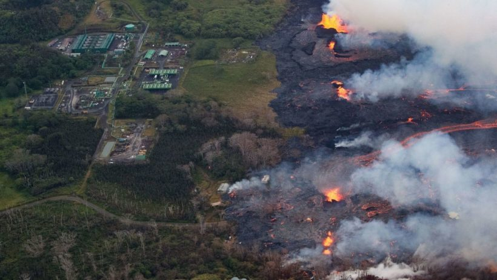
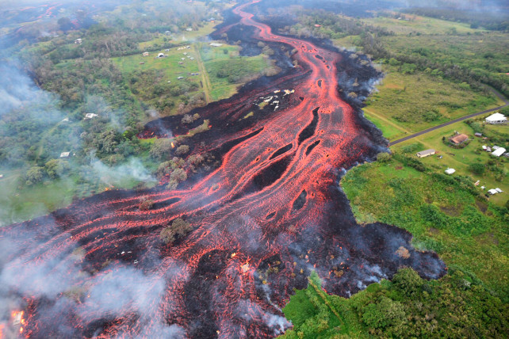
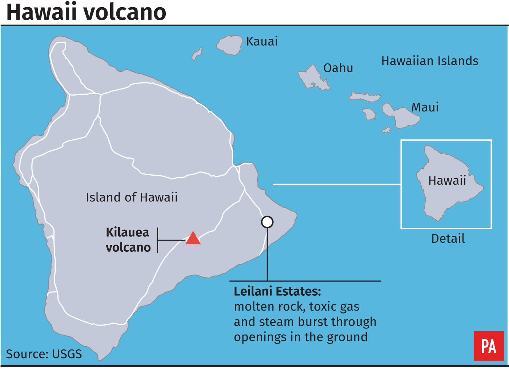

An Aerial view of fissure eruptions near the Puna Geothermal Venture facility.
Workers scrambled to shut down a geothermal power plant on Hawaii's Big Island before it gets doused in fiery lava. Crews worked overnight (May 22) to close the 11th and final well at the Puna Geothermal Venture (PGV) plant, which provides 25 percent of the Big Island’s power, to prevent the uncontrollable release of toxic fumes. Molten rock from an active fissure flowed as close as 200 yards from the nearest well pad, officials said.The plant has been closed since May 3, when Kilauea volcano began erupting, sending red-hot lava spewing out of fissures on the eastern side of the island.Some 60,000 gallons of pentane, a highly flammable chemical stored at the plant, were moved and the state said last week it was pumping cold water into the wells and would cap them with iron plugs.The plant’s wells are as deep as 8,000 feet and tap into extremely hot water and steam used to run turbines and produce electricity.Kilauea volcano most recently exploded at its summit shortly before 6 p.m. local time Monday, according to the Hawaiian Volcano Observatory."The resulting ash plume may affect surrounding areas," it said.

Lava flows from fissures near Pahoa, Hawaii.
Lava has been oozing out into the ocean from two flows located three miles east of the plant, creating acid fumes and "laze" - a combination of scorching lava and haze that is formed when erupting lava reacts with sea water.Laze is potentially deadly if inhaled."If one were to be near the laze, because of the various acids, it would be corrosive to the eyes, the nose and respiratory tract, and the skin," Dr. Alvin Bronstein from the Hawaii Department of Health told reporters.Explosions from methane gases are also possible if lava mixes with the flammable gas given off by rotting vegetation.Kilauea’s eruption has produced two dozen fissures and is entering a more violent phase, sending larger volumes of molten rock shooting out of the ground and flowing farther than before.At least 44 homes have been destroyed in the Leilani Estates and Lanipuna Gardens area of the Puna district.

Kilauea volcano on the Island of Hawaii.
Formed by volcanoes in the Pacific Ocean, Hawaii is made up of more than 100 islands but is best known for its eight main islands. Of these, only seven are inhabited.Hawaii – also known as the Big Island – is not only the largest of the Hawaiian islands, it is also the largest island in the United States. The Big Island is 4,028 square miles and is the third most visited by tourists each year.Maui is 727 square miles, making it the second largest island.
Oahu is by far the most popular destination among tourists. It is the third largest Hawaiian island, with 597 square miles. It is also the most populated, and home to the capital, Honolulu. Oahu is home to Waikiki and Pearl Harbor.Kauai With 562 square miles, Kauai is the fourth largest of the Hawaiian islands. Molokai is the fifth largest Hawaiian island and has 260 square miles. It is best known for agriculture and ranching but is also notable for being home to the world’s highest sea cliffs.Lanai was once nicknamed the “Pineapple Island” because, at one point, nearly the entire island was a pineapple plantation. Lanai is now the fifth most visited island and has 140 square miles. Most of the island remains undeveloped, though there are several resorts and golf courses.Niihau, the seventh largest island, because it is privately owned. Niihau has 69 square miles and is used for raising livestock.Kahoolawe is the smallest of the eight major islands. It is a mere 45 square miles, is uninhabited,and access is prohibited. It was once used as a target by the U.S. military, which is still cleaning up unexploded artillery shells.